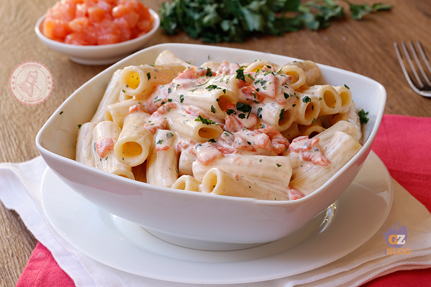

Pasta al salmone affumicato

Description
Le Lasagne sono un primo piatto squisito, grande classico della cucina italiana, in particolare bolognese, da cui prendono il nome: ‘Lasagne alla bolognese‘. Si realizzano con rettangoli di pasta all’uovo chiamati appunto ‘lasagne‘ , prima assemblati in strati con Ragù, Besciamella e parmigiano
Ingredients
- 600 gr di carne macinata di manzo ( non troppo magra)
- 250 gr di carne macinata di maiale ( non troppo magra)
- 700 ml di passata di pomodoro densa + acqua
- 1 cipolla bianca piccola
- 70 gr di sedano
- 70 gr di carota
- 3 cucchiai di olio extravergine
- 100 ml di vino rosso (bene anche il bianco)
- 50 ml di latte intero
- sale
- pepe
- Per il ragù alla bolognese fai rosolare il sedano, la carota e la cipolla tritati con 3 cucchiai di olio, 40 gr di burro e la pancetta. Aggiungi quindi la salsiccia spellata e sgranata e le carni macinate. Lascia soffriggere il tutto, mescolando spesso, finché le carni saranno leggermente croccanti.
- Bagna il ragù con il vino, lascialo evaporare e unisci il passato di pomodoro. Prosegui la cottura a fuoco basso per almeno 2 ore, aggiungendo poco brodo bollente, se necessario. Verso fine cottura regola di sale e pepe.
- Prepara la besciamella. Fai fondere 50 gr di burro, unisci 50 gr di farina, mescola e diluisci con mezzo litro di latte aggiunto a poco a poco; condisci con sale, pepe e noce moscata e cuoci sempre mescolando, per una decina di minuti.
- Taglia la pasta verde agli spinaci a rettangoli di 10x15 cm di lato o della dimensione della pirofila che poi utilizzerai e lessali, pochi per volta, in abbondante acqua bollente salata, a cui avrai aggiunto 2-3 cucchiai di olio. Sgocciolali e falli asciugare su teli.
- Imburra una pirofila e disponi uno strato di fogli di pasta verde, accavallandoli leggermente. Spalmali con un velo di besciamella, ricoprili di ragù e spolverizza con parmigiano grattugiato.
- Prosegui gli strati allo stesso modo, fino a esaurire gli ingredienti, terminando le lasagne alla bolognese con il ragù e il parmigiano (dovranno essere almeno 4 strati, possibilmente anche 6).
- Distribuisci sulla superficie delle lasagne qualche fiocchetto di burro e cuoci la pasta al forno per mezz'ora abbondante in forno già caldo a 180° C, finché sarà ben gratinata. Fai riposare le lasagne alla bolognese per qualche minuto fuori dal forno e servile dalla pirofila.